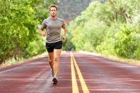
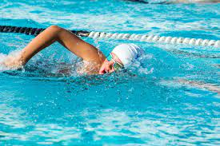
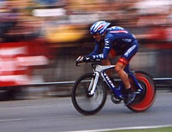

Trčanje je metod zemaljskog pokretanja, koje omogućava ljudima i životinjama da se kreću jako brzo. Trčanje je tip hoda koji karakteriše vazdušna faza, prilikom koje su stopala iznad zemlje, iako ima izuzetaka. To je u suprotnosti sa hodanjem, kod kojeg je jedna noga uvijek u kontaktu sa zemljom, noge se uglavnom drže pravo, dok je centar za gravitaciju iznad svoda stopala u stilu obrnutog klatna. Karakteristična odlika tijela prilikom trčanja sa tačke gledišta je promjena u kinetičkoj i potencijalnoj energiji u koraku, koja se javlja istovremeno, dok se čuvanje energije ispunjava pomoću gipkih tetiva i elastičnosti neaktivnih mišića. Pojam trčanje može da se odnosi na bilo koju varijantu brzinskog kretanja, od džoginga do sprinta.
Plivanje je kretanje osobe kroz vodu, obično u vidu rekreacije, sporta, vežbe ili preživljavanja. Lokomocija se postiže kretanje udova, tela ili oboje. Ljudi mogu zadržati dah pod vodom i naučiti osnove lokomocije plivanja nekoliko sedmica od rođenja, kao nagon za preživaljavanjem. Plivanje je stalno u vrhu javnih rekreativnih aktivnosti, a u nekim zemljama su časovi plivanja obavezni deo obrazovnog programa. Kao formalizovani sport, plivanje je karakteristično za niz lokalnih, nacionalnih i međunarodnih takmičenja, uključujući svake moderne Letnje olimpijske igre.
Biciklizam je rekreacija, sport i način kretanja kopnom korišćenjem bicikla, prevoznog sredstva na ljudski pogon. Ljudi koji se bave biciklizmom se nazivaju „biciklistima”. Bicikl je nastao je u Evropi u 19. veku. Otkriće bicikla nije vezano za određenu godinu ili konkretnog izumitelja. Zbog relativno jeftine izrade i dostupnosti to je danas najraširenije prevozno sredstvo. Pretpostavlja se da danas na svetu postoji preko 1.000.000.000 bicikala.
